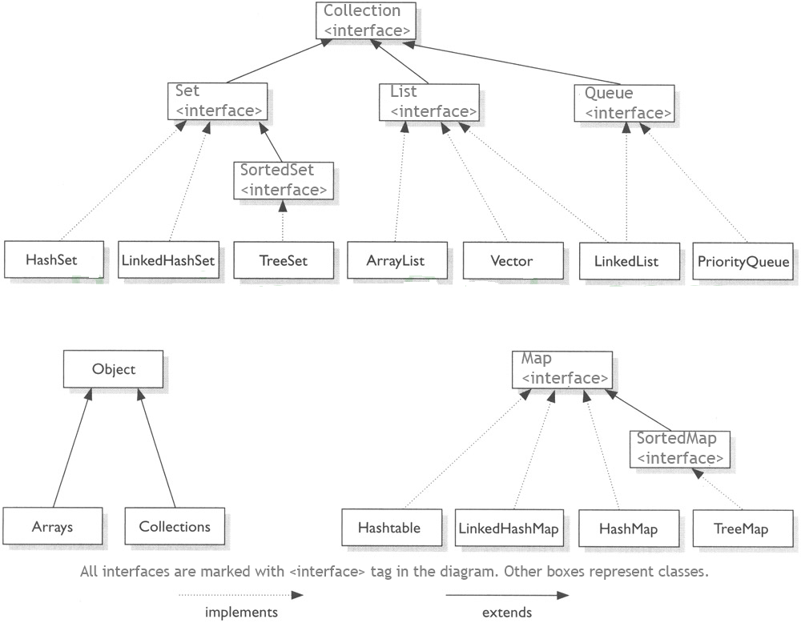
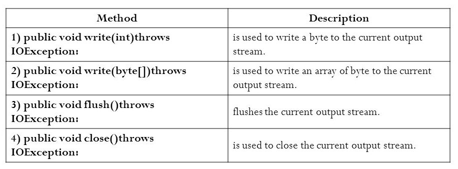
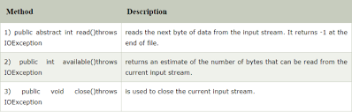

- Enum improves type safety
- Enum can be easily used in switch
- Enum can be traversed
- Enum can have fields, constructors and methods
- Enum may implement many interfaces but cannot extend any class because it internally extends Enum class
Program
Class Enum
{
//defining the enum inside the class
public enum Season { WINTER, SPRING, SUMMER, FALL }
//main method
public static void main(String[] args)
//traversing the enum
for (Season s : Season.values())
System.out.println(s);
}}Output
WINTER
SPRING
SUMMER
FALL
Wrapper class
- A Wrapper class is a class whose object wraps or contains a primitive data types.
- When we create an object to a wrapper class, it contains a field. in this field, we can store a primitive data types
Use / Need of Wrapper classes in Java
1.Collection Framework: Java collection framework works with objects only. All classes of the collection framework (ArrayList, LinkedList, Vector, HashSet, LinkedHashSet, TreeSet, PriorityQueue, ArrayDeque, etc.) deal with objects only.
2.Change the value in Method: Java supports only call by value. So, if we pass a primitive value, it will not change the original value. But, if we convert the primitive value in an object, it will change the original value
3.Serialization: We need to convert the objects into streams to perform the serialization.
4.Synchronization: Java synchronization works with objects in Multithreading.
5.java.util package: The java.util package provides the utility classes to deal with objects.Primitive type and their equal wrapper class
PRIMITIVE DATA TYPE WRAPPER CLASS char Character byte Byte short Short long Long float Float double Double boolean Boolean Autoboxing
The automatic conversion of primitive data type into its corresponding wrapper class is known as autoboxing, for example, byte to Byte, char to Character, etc.
Example Program
public class WrapperExample1{
public static void main(String args[]){
//Converting int into Integer
int a=20;
Integer i=Integer.valueOf(a); //converting int into Integer explicitly
Integer j=a; //autoboxing, now compiler will write Integer.valu eOf(a) internally
System.out.println(a+" "+i+" "+j);
}}unboxing
- The automatic conversion of wrapper type into its corresponding primitive type is known as unboxing.
- It is the reverse process of autoboxing.
Example Program
public class WrapperExample2{
public static void main(String args[]){
Integer a=new Integer(3);
int i=a.intValue(); //converting Integer to int explicitly
int j=a; //unboxing, now compiler will write a.intValue() internally
System.out.println(a+" "+i+" "+j);
}}Generic
- It would be nice if we could write a single sort method that could sort the elements in an Integer array, a String array, or an array of any type that supports ordering.
- Using Java Generic concept, we might write a generic method for sorting an array of objects, then invoke the generic method with Integer arrays, Double arrays, String arrays and so on, to sort the array elements.
- The idea is to allow type (Integer, String, … etc and user defined types) to be a parameter to methods, classes and interfaces.
1. Generic Class
2. Generic Methods
3. Generic InterfaceGeneric Class
- A class that can refer to any type is known as generic class.
- In generic we are associating type parameter to class such type of parameterized class is known as generic or template class
- Generic class can have one or more type parameters separated by commas. These classes are known as parameterized classes or parameterized types because they accept one or more parameters.
To Create a generic class
class classname
Eg: class Test
To create an instance of generic class :
BaseTypeobj = new BaseType () Example program
class MyGen
{
T obj;
void add(T obj)
{
this.obj=obj;
}
T get()
{
return obj;
}
}
class TestGenerics3
{
public static void main(String args[])
{
MyGenm=new MyGen ();
m.add(2);
//m.add("vivek");//Compile time error
System.out.println(m.get());
}
}Output
2Generic method
- Like generic class, we can create generic method that can accept any type of argument.
Example program
public class TestGenerics4
{
public static < E > void printArray(E[] elements)
{
for ( E element : elements)
{
System.out.println(element );
}
System.out.println();
}
public static void main( String args[] )
{
Integer[] intArray = { 10, 20, 30, 40, 50 };
Character[] charArray = { 'J', 'A', 'V', 'A', 'T','P','O','I','N','T' };
System.out.println( "Printing Integer Array" );
printArray( intArray );
System.out.println( "Printing Character Array" );
printArray( charArray );
}
}
Output
Printing Integer Array
10
20
30
40
50
Printing Character Array
J
A
V
A
T
P
O
I
N
T
Generic Interface
Generic Interfaces work same as Generic Classes. generic interface that declares the method called myMethod( ). In general, a generic interface is declared in the same way as is a generic class. ... Of course, if a class implements a specific type of generic interface, then the implementing class does not need to be generic.
Example program
interface People
{
name: string
age: number
}
interface Celebrity extends People {
profession: string
}
function printName(theInput: T): void {
console.log(`Name: ${theInput.name} \nAge: ${theInput.age} \nProfession: ${theInput.profession}`);
}
let player: Celebrity = {
name: 'Rohit Sharma', age: 30, profession: 'Cricket Player' }
printName(player);
Output
Name: Rohit Sharma
Age: 30
Profession: Cricket player
Collection
- The Java Collections Framework is a collection of interfaces and classes which helps in storing and processing the data efficiently.
- The Collection in Java is a framework that provides an architecture to store and manipulate the group of objects.
- Java Collections can achieve all the operations that you perform on a data such as searching, sorting, insertion, manipulation, and deletion.

Useful methods of collections framework- add(): It is used to insert an element in this collection.
- remove(): It is used to delete an element from the collection.
- Size(): It returns the total number of elements in the collection.
- Clear(): It removes the total number of elements from the collection.
- Contains(): It is used to search an element.
List
A List is an ordered Collection (sometimes called a sequence). Lists may contain duplicate elements. Elements can be inserted or accessed by their position in the list, using a zero-based index.
Syntax:
- List
list1= new ArrayList(); - List
list2 = new LinkedList();
- List
list3 = new Vector();
Array List
- It implements the List interface. It uses a dynamic array to store the duplicate element of different data types.
- Java ArrayList class can contain duplicate elements.
- Java ArrayList class maintains insertion order.
- Java ArrayList class is non synchronized.
- Java ArrayList allows random access because array works at the index basis.
- In Java ArrayList class, manipulation is slow because a lot of shifting needs to occur if any element is removed from the array list.
Useful methods of ArrayList class- get(): It is used to fetch the element from the particular position of the list.
- isEmpty(): It returns true if the list is empty, otherwise false.
Example program
import java.util.ArrayList;
public class AList {
public static void main(String[] args) {
ArrayListal=new ArrayList ();
al.add("Gowtham");
al.add("hhh");
al.add(1,"rag");
System.out.println(al);
System.out.println(al.size());
for(int i=0;i
System.out.println(al.get(i));
}
al.clear();
System.out.println(al.contains(10));
System.out.println(al);
}
}
Linked List
- LinkedList is a doubly-linked list implementation of the List and Deque interfaces.
- The important points about Java LinkedList are:
- Java LinkedList class can contain duplicate elements.
- Java LinkedList class maintains insertion order.
- Java LinkedList class is non synchronized.
- In Java LinkedList class, manipulation is fast because no shifting needs to occur.
- Java LinkedList class can be used as a list, stack or queue.
LinkedList Method- add() -It is used to append the specified element to the end of a list
- add(int index, E element) -It is used to insert the specified element at the specified position index in a list.
- addFirst() -It is used to insert the given element at the beginning of a list.
- addLast() -It is used to append the given element to the end of a list
- peek() - It retrieves the first element of a list
- peekLast() - It retrieves the last element of a list or returns null if a list is empty
Example Program
import java.util.LinkedList;
public class LList {
public static void main(String[] args) {
LinkedListll=new LinkedList ();
ll.add("raja");
ll.add(1,"kavin");
System.out.println(ll);
ll.addFirst("bharathi");
ll.addLast("arun");
System.out.println(ll);
System.out.println(ll.peekFirst());
System.out.println(ll.peekLast());
}
}
Vector List
- Like ArrayList it also maintains insertion order but it is rarely used in non-thread environment as it is synchronized and due to which it gives poor performance in searching, adding, delete and update of its elements.
Vector Method- add()
- get()
- contains()
- firstElement()
- lastElement()
Example program
import java.util.Vector;
public class VList {
public static void main(String[] args) {
Vector v=new Vector();
v.add("hello");
v.add("terror");
v.add("CSE B");
System.out.println(v);
System.out.println(v.get(1));
if (v.contains("terror"))
{
System.out.println("yes terror is availabe");
}
else
{
System.out.println("element not forund");
}
System.out.println("First elemnt "+v.firstElement());
System.out.println("last elemets "+v.lastElement());
}
}
Set
Hashset
Java HashSet class is used to create a collection that uses a hash table for storage. It inherits the AbstractSet class and implements Set interface.- HashSet stores the elements by using a mechanism called hashing.
- HashSet contains unique elements only.
- HashSet allows null value.
- HashSet class is non synchronized.
- HashSet doesn't maintain the insertion order. Here, elements are inserted on the basis of their hashcode.
- HashSet is the best approach for search operations.
- The initial default capacity of HashSet is 16, and the load factor is 0.75
Example program
import java.util.*;
class HashSet1{
public static void main(String args[]){
//Creating HashSet and adding elements
HashSetset=new HashSet();
set.add("One");
set.add("Two");
set.add("Three");
set.add("Four");
set.add("Five");
Iteratori=set.iterator();
while(i.hasNext())
{
System.out.println(i.next());
}
}
}
Output
Five One Four Two Three
Method
- add()
- remove();
- removeAll();
- Converting set into array: Array String[] a = new String[hset.size()]; hset.toArray(a);
Linked Hashset
- Java LinkedHashSet class is a Hashtable and Linked list implementation of the set interface. It inherits HashSet class and implements Set interface.
Example Program-
import java.util.*;
class LinkedHashSet1{
public static void main(String args[]){
LinkedHashSetset=new LinkedHashSet();
set.add("One");
set.add("Two");
set.add("Three");
set.add("Four");
set.add("Five");
Iteratori=set.iterator();
while(i.hasNext())
{
System.out.println(i.next());
}
}
}
Output
One Two Three Four Five
TreeSet- Java TreeSet class implements the Set interface that uses a tree for storage.
- It inherits AbstractSet class and implements the NavigableSet interface. The objects of the TreeSet class are stored in ascending order.
- Java TreeSet class contains unique elements only like HashSet.
- Java TreeSet class access and retrieval times are quiet fast.
- Java TreeSet class doesn't allow null element.
- Java TreeSet class is non synchronized.
- Java TreeSet class maintains ascending order.
Example Program
import java.util.*;
class TreeSet1{
public static void main(String args[]){
//Creating and adding elements
TreeSetal=new TreeSet ();
al.add("Ravi");
al.add("Vijay");
al.add("Ravi");
al.add("Ajay");
//Traversing elements
Iteratoritr=al.iterator();
while(itr.hasNext()){
System.out.println(itr.next());
}
}
}
Output
Ajay Ravi VijayMap
- A map contains values on the basis of key, i.e. key and value pair. Each key and value pair is known as an entry. A Map contains unique keys
- A Map doesn't allow duplicate keys, but you can have duplicate values. HashMap and LinkedHashMap allow null keys and values, but TreeMap doesn't allow any null key or value.
HashMap
- Java HashMap class implements the map interface by using a hash table. It inherits AbstractMap class and implements Map interface.
- Java HashMap class contains values based on the key.
- Java HashMap class contains only unique keys.
- Java HashMap class may have one null key and multiple null values.
- Java HashMap class is non synchronized.
- Java HashMap class maintains no order.
- The initial default capacity of Java HashMap class is 16 with a load factor of 0.75.
Example program
import java.util.*;
public class HashMap2 {
public static void main(String args[]) {
HashMap
map.put(100,"Amit");
map.put(101,"Vijay");
map.put(102,"Rahul");
map.put(103, "Gaurav");
System.out.println("Initial list of elements: "+map);
//key-based removal
map.remove(100);
System.out.println("Updated list of elements: "+map);
//value-based removal
map.remove(101);
System.out.println("Updated list of elements: "+map);
//key-value pair based removal
map.remove(102, "Rahul");
System.out.println("Updated list of elements: "+map);
}
}
Linked Hashmap
- Java LinkedHashMap class is Hashtable and Linked list implementation of the Map interface, with predictable iteration order.
- It inherits HashMap class and implements the Map interface.
- Java LinkedHashMap contains values based on the key.
- Java LinkedHashMap contains unique elements.
- Java LinkedHashMap may have one null key and multiple null values.
- Java LinkedHashMap is non synchronized.
- Java LinkedHashMap maintains insertion order.
- The initial default capacity of Java HashMap class is 16 with a load factor of 0.75.
Example Program
import java.util.*;
class LinkedHashMap2{
public static void main(String args[]){
LinkedHashMap
map.put(100,"Amit");
map.put(101,"Vijay");
map.put(102,"Rahul");
//Fetching key
System.out.println("Keys: "+map.keySet());
//Fetching value
System.out.println("Values: "+map.values());
//Fetching key-value pair
System.out.println("Key-Value pairs: "+map.entrySet());
}
}
Output
Keys: [100, 101, 102] Values: [Amit, Vijay, Rahul] Key-Value pairs: [100=Amit, 101=Vijay, 102=Rahul]
TreeMap
- Java TreeMap class is a red-black tree based implementation. It provides an efficient means of storing key-value pairs in sorted order.
- Java TreeMap contains values based on the key. It implements the NavigableMap interface and extends AbstractMap class.
- Java TreeMap contains only unique elements.
- Java TreeMap cannot have a null key but can have multiple null values.
- Java TreeMap is non synchronized.
- Java TreeMap maintains ascending order.
Example program
- import java.util.*;
class TreeMap1{
public static void main(String args[]){
TreeMap
map.put(100,"Amit");
map.put(102,"Ravi");
map.put(101,"Vijay");
map.put(103,"Rahul");
for(Map.Entry m:map.entrySet()){
System.out.println(m.getKey()+" "+m.getValue());
}
}
}
Output
Output:100 Amit 101 Vijay 102 Ravi 103 Rahul
Java I/O(Input and Output)
Java I/O (Input and Output) is used to process the input and produce the output. Java uses the concept of a stream to make I/O operation fast. The java.io package contains all the classes required for input and output operations. We can perform file handling in Java by Java I/O API.
Streams
A stream is a sequence of data. In Java, a stream is composed of bytes. It's called a stream because it is like a stream of water that continues to flow.
In Java, 3 streams are created for us automatically. All these streams are attached with the console.- 1) System.out: standard output stream
2) System.in: standard input stream
3) System.err: standard error stream
Let's see the code to print output and an error message to the console.- 1.System.out.println("simple message");
2.System.err.println("error message");
Let's see the code to get input from console.- 1.int i=System.in.read();//returns ASCII code of 1st character
System.out.println((char)i);//will print the character
OutputStream vs InputStream
The explanation of OutputStream and InputStream classes are given below:
OutputStream
Java application uses an output stream to write data to a destination; it may be a file, an array, peripheral device or socket.
InputStream
Java application uses an input stream to read data from a source; it may be a file, an array, peripheral device or socket.
Let's understand the working of Java OutputStream and InputStream by the figure given below.

OutputStream class
OutputStream class is an abstract class. It is the superclass of all classes representing an output stream of bytes. An output stream accepts output bytes and sends them to some sink.
Useful methods of OutputStream

OutputStream Hierarchy

InputStream class
InputStream class is an abstract class. It is the superclass of all classes representing an input stream of bytes.
Useful methods of InputStream

InputStream Hierarcy

Enum
The Enum in Java is a data type which contains a fixed set of constants.Java Enums can be thought of as classes which have a fixed set of constants (a variable that does not change).
The Java enum constants are static and final implicitly. It is available since JDK 1.5.Enums are used to create our own data type like classes. The enum data type (also known as Enumerated Data Type) is used to define an enum in Java. Unlike C/C++, enum in Java is more powerful. Here, we can define an enum either inside the class or outside the class.
Java Enum internally inherits the Enum class, so it cannot inherit any other class, but it can implement many interfaces.
Points to remember for Java Enum